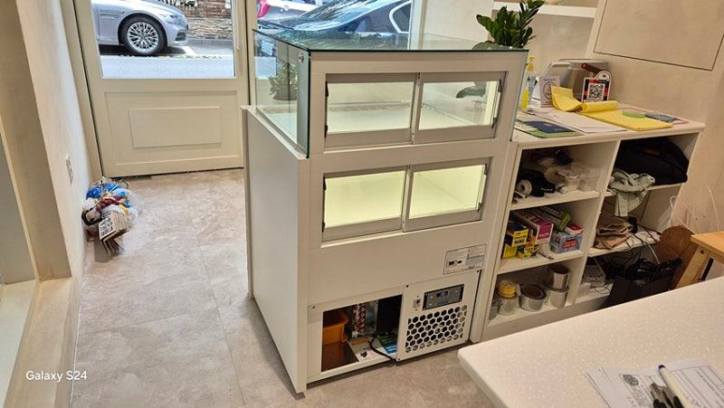
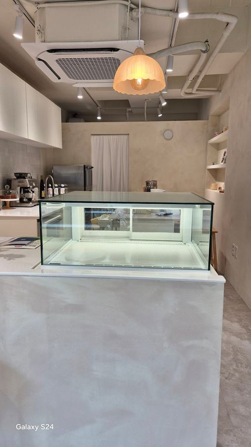

반찬(진열)쇼케이스
반찬쇼케이스 업체, 계약 전에 꼭 물어볼 여섯 가지

반찬쇼케이스 업체를 고를 때는 직접 제조하는지, 매장 실측과 반찬 용기 크기를 먼저 묻는지, 견적서에 콤프레셔와 유리 사양을 적어 주는지, 가까운 A/S 거점이 있는지를 확인하세요. 이 질문에 막힘없이 답하는 업체라면 설치 후 생기는 문제에도 대응이 빠를 가능성이 높습니다.
안녕하세요. 반찬가게와 한식 매장의 진열 냉장고를 직접 만드는 한성쇼케이스입니다.
1인 가구가 늘면서 반찬가게를 여시는 분들도 많아졌고, 반찬쇼케이스 업체를 찾는 문의도 함께 늘었습니다.
검색해 보면 업체는 많은데, 사진만 보면 다 비슷해 보여 어디에 맡겨야 할지 막막하다는 말씀을 자주 듣습니다.
반찬쇼케이스는 한 번 들이면 오래 쓰는 비싼 장비이고, 반찬은 온도와 습기에 예민해 고장 한 번이 그날 장사를 좌우합니다.
그래서 겉모습보다 업체가 어떻게 일하는지를 먼저 확인하셔야 합니다.
오늘은 상담 자리에서 바로 꺼내 물어보실 수 있는 질문들을 정리해 드리겠습니다. 답을 들어 보면 업체의 일하는 방식이 꽤 선명하게 보입니다.
1. 직접 만드는 곳인가요
제조 공장을 갖춘 업체인지, 다른 곳 제품을 받아 파는 유통 업체인지부터 물어보세요. 직접 만드는 곳은 매장 폭에 맞춰 사이즈를 바꾸거나 칸 구성을 조정하는 데 제약이 적고, 고장이 났을 때도 구조를 잘 알아 대응이 빠릅니다.
가능하다면 공장이나 전시장을 방문해 실물을 직접 보고 문을 여닫아 보시길 권합니다. 사진으로는 유리 두께나 문 닫히는 느낌, 마감 상태를 알 수 없습니다.
- 제조 공장 보유 여부
- 실물 확인이 가능한지
2. 매장과 반찬을 먼저 묻나요
좋은 업체는 견적보다 질문을 먼저 합니다. 설치 자리의 폭과 깊이, 출입문 폭, 햇빛이 드는 방향, 주방 화구와의 거리, 콘센트 위치처럼 매장 환경을 먼저 확인하려고 하죠.
반찬쇼케이스라면 여기에 하나가 더 붙습니다. 어떤 크기의 반찬 통을 몇 개 놓을지, 덜어 파는지 포장해서 파는지를 물어야 칸 깊이와 유리 높이를 제대로 잡을 수 있습니다.
이 질문 없이 기성 규격만 권한다면 한 번 더 생각해 보세요.
매장 환경을 묻는 이유는 분명합니다. 햇빛이 드는 자리면 온도 편차가 생기고, 손님과 직원 동선은 앞문·뒷문 선택을 바꾸며, 바닥 수평은 냉기 흐름에, 전원 위치는 장비 가동 안정성에 영향을 줍니다.
- 실측을 직접 오거나 요청하는지
- 반찬 통 크기와 판매 방식을 묻는지


3. 견적서에 사양이 적혀 있나요
견적서에 총액만 있고 사양이 비어 있다면 비교가 불가능합니다. 콤프레셔 종류, 간냉식인지 직냉식인지, 결로 방지 유리가 들어가는지, 조명 색과 선반 구성이 적혀 있는지 확인하세요.
반찬가게는 국물 있는 반찬과 따뜻한 김이 많아 결로 방지 유리 여부가 특히 중요합니다.
한성쇼케이스는 유럽제·삼성 냉각 콤프를 사용하고, 견적 단계에서 사양을 항목별로 안내해 드립니다.
4. 설치 후에는 어떻게 되나요
제작 기간과 설치 일정, 반입 경로 확인을 누가 하는지 물어보세요. 인테리어 공사와 일정이 엇갈리면 오픈이 늦어질 수 있습니다.
마지막으로 A/S입니다. 고장이 나면 어디로 연락하는지, 우리 지역에 수리 거점이 있는지, 출장 수리가 되는지 확인해 두세요.
한성쇼케이스는 전국 240여 개 A/S 센터를 운영하고 있습니다.
설치 당일 누가 와서 수평과 문 닫힘, 온도 안정까지 확인해 주는지도 함께 물어 두시면 좋습니다.
- 제작 기간과 설치 일정
- 지역 A/S 거점과 출장 수리
체크리스트
- 제조 공장 보유와 실물 확인
- 매장 실측과 환경 질문
- 반찬 통 크기·판매 방식 질문
- 견적서의 콤프·유리·조명 사양
- 제작 기간과 지역 A/S 거점
현장에서 자주 보는 경우: 다른 곳에서 샀다가 다시 맞추러 오시는 사장님
반찬냉장고 상담을 하다 보면 이미 다른 곳에서 구매했다가 마음에 들지 않아 다시 찾아오시는 사장님을 적지 않게 뵙습니다.
기성 쇼케이스는 사이즈가 정해져 있어, 쇼케이스가 들어갈 수 있는 매장인지부터 따져 보고 계약하는 앞뒤가 바뀐 일도 생깁니다.
비싼 장비를 두 번 사시는 셈이라 그만큼 더 꼼꼼하게 제작해 드렸던 경험이 많습니다. 반찬냉장고는 직접 눈으로 확인하고 충분히 상담한 뒤 매장에 맞는 크기와 디자인을 정하는 것이 중요하며, 한성쇼케이스는 생산부터 판매, 사후 A/S까지 직접 책임지고 있습니다.




자주 묻는 질문
상담 때 무엇을 가져가면 좋을까요?
설치 자리 실측 치수와 매장 사진, 주로 쓰는 반찬 통 하나면 충분합니다. 통을 직접 보면 칸 깊이와 유리 높이를 훨씬 정확하게 잡을 수 있습니다.
지방 매장도 맞춤 제작과 설치가 되나요?
가능합니다. 실측 정보와 반입 경로를 미리 확인해 제작하고, 설치 이후에는 가까운 A/S 센터를 통해 관리받으실 수 있습니다.
여러 업체 견적을 비교할 때 기준이 있을까요?
콤프레셔, 냉각 방식, 결로 방지 유리, 조명, 선반 구성을 같은 조건으로 맞춘 뒤 비교하세요. 그다음 A/S 범위와 제작 기간을 함께 보면 차이가 분명해집니다.
매장 조건에 맞춰 만드는 한성쇼케이스
원하시는 제품 사진과 설치할 공간 사진만 보내 주셔도 매장에 맞는 구성을 추천해 드립니다.
- 전국 240여 개 A/S 전담 센터 운영
- 본사 대량 자재 매입으로 품질 대비 합리적인 가격
- 유럽제·삼성 냉각 콤프레셔 적용
- 국내 최초 쇼케이스 전문 디자이너 상주
매장 폭과 원하는 진열 구성을 알려 주세요. 실측과 견적을 안내해 드립니다.
031-986-2458